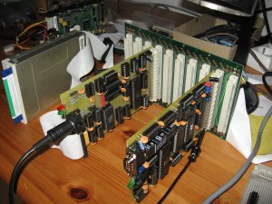

Roll your own VC1581
(C) 2006-2006 André Fachat
This page describes how you can build your own VC1581 using the boards of the CS/A65 computer.
Basically what you do is to combine the PETCPU and the DRVIO boards into one computer, put the drive ROM into a ROM for the PETCPU ROM socket and there you are. The following sections describe the special settings on the different boards.
- 2006-11-26 Published the page!
Board settings

This section describe the CS/A65 boards making up the VC1581.
Here is a picture of the two boards on
a backplane.
{kind=link}
- PETCPU board The PETCPU board must be set to a maximum of 8k (or 16k) RAM on the board itself, and a 32k ROM, with bus /IOSEL disabled. (Note: the area $E800-$F000 in the VC1581 ROM is unused, so the bus I/O area could actually be used). Further jumper settings are described on the board page.
- DRVIO board For the use of the DRVIO board some features had to be implemented. First of all, the VC1581 does not handle the drive select signal. As the DRVIO board handles two drives, the additional control port selects drive 0 after reset, and any one of the two drives is always selected. The VC1581 does also not handle the density selection, so the DRVIO board handles the density with the control port, and double density (for VC1581) is selected on reset. The VC1581 reads the drive ready signal - that does not exist for new PC floppy drives. A 2k2 Ohm resistor constantly pulls the CIA PA1 input low. The board jumper settings are documented on the board page.
ROMs
I used the 2nd edition of the original Commodore VC1581 ROMs,
that you can get on the CBM archive page.
Pictures
Some pictures :-)
Disclaimer
All Copyrights are acknowledged.
The information here is provided under the terms of the
GNU Public License version 2 unless noted otherwise.
Return to Homepage
Last modified: 2010-02-14